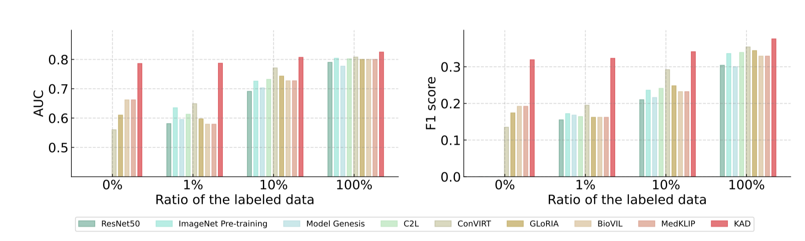
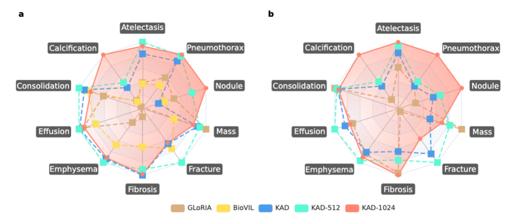

Knowledge-enhanced Visual-Language Pre-training on Chest Radiology Images
|
Xiaoman Zhang1,2,
|
Chaoyi Wu1,2,
|
Yanfeng Wang1,2,
|
Ya Zhang1,2,
|
Weidi Xie1,2,
|
|
|
1CMIC, Shanghai Jiao Tong University
|
2Shanghai AI Lab
|
Abstract
While multi-modal foundation models pre-trained on large-scale data have been successful in natural language understanding and vision recognition, their use in medical domains is still limited due to the fine-grained nature of medical tasks and the high demand for domain knowledge.
To address this challenge, we propose an approach called Knowledge-enhanced Auto Diagnosis (KAD) which leverages existing medical domain knowledge to guide vision-language pre-training using paired chest X-rays and radiology reports. We evaluate KAD on four external X-ray datasets and demonstrate that its zero-shot performance is not only comparable to that of fully-supervised models, but also superior to the average of three expert radiologists for three (out of five) pathologies with statistical significance.
Moreover, when few-shot annotation is available, KAD outperforms all existing approaches in fine-tuning settings, demonstrating its potential for application in different clinical scenarios.
Architecture
Overview of the KAD workflow. {a}, Knowledge base used for training the knowledge encoder. It contains two parts, knowledge graph consisting of concept-relation-concept triplets and concept info list consisting of concept-definition pairs. {b}, The knowledge encoder is trained to learn textual representations by maximizing similarities between positive pairs. {c}, We first extract the clinical entities and relations from the radiology reports, this can be achieved by heuristic rules, using an off-the-shelf reports information extraction toolbox~(Entity Extraction), or ChatGPT, then we employ the pre-trained knowledge encoder to perform image-text contrastive learning with paired chest X-rays and extracted entities and optimize a Disease Query Network (DQN) for classification. {d}, During the inference stage, we simply encode the disease name as a query input, and DQN will output the probability that the pathology is present in the input image.

Visualization
Zero-shot visualization of randomly chosen samples from ChestX-Det10, we present both the original image (left) and attention maps generated from KAD, KAD-512, and KAD-1024. In the original images, red boxes denote lesion areas annotated by radiologists. In the attention maps, the red to blue spectrum is plot on the original image with red representing high-attention regions and blue representing low attention.
Results
R1: Padchest
Comparison of KAD with SOTA medical image-text pre-training models under zero-shot setting on radiographic findings or diagnoses in the PadChest dataset. We evaluate model on the human-annotated subset of the PadChest dataset (n = 39,053 chest X-rays) and mean AUC and $95\%$ CI of KAD are shown for each radiographic finding or diagnosis (n > 50). a, Results of seen classes. Note that CheXNet is a supervised model trained on the PadChest dataset. b, Results of unseen classes. KAD achieves an AUC of at least 0.900 on 31 classes and at least 0.700 on 111 classes out of 177 unseen classes in the PadChest test dataset. Top 50 classes where (n > 50) in the test dataset (n = 39,053) are shown in the figure.

R2: ChestXray14
Comparison of proposed KAD with SOTA self-supervised baseline models and medical image-text pre-training models on ChestXray14 with different ratio of labeled data used for fine-tuning. AUC, F1 score are reported, and the metrics refer to the macro average on all the diseases. Note that for fairness, all baselines use the same backbone as the basic image encoder (that is, ResNet50). The percentages refer to the percentage of labels used in the training data.

R3: CheXpert
Comparisons of proposed KAD with SOTA medical image-text pre-training models and three board-certified radiologists on five competition pathologies in CheXpert test dataset (n=500). Note that, all models are directly evaluated on CheXpert dataset under zero-shot setting. The AUC, F1 scores and MCC of five pathologies are shown in the plots, where the average and 95% CI are shown.
R4: ChestX-Det10
Comparisons of proposed KAD with SOTA medical image-text pre-training models on ChestX-Det10 dataset. AUC scores are shown for the zero-shot classification task in (a), and Pointing game scores are shown for the zero-shot grounding task in (b). We use the best results as the maximum value for each category in the radar chart, and 0.5 as the minimal value for (a), 0 as the minimal value for (b).

Acknowledgements
Based on a template by Phillip Isola and Richard Zhang.